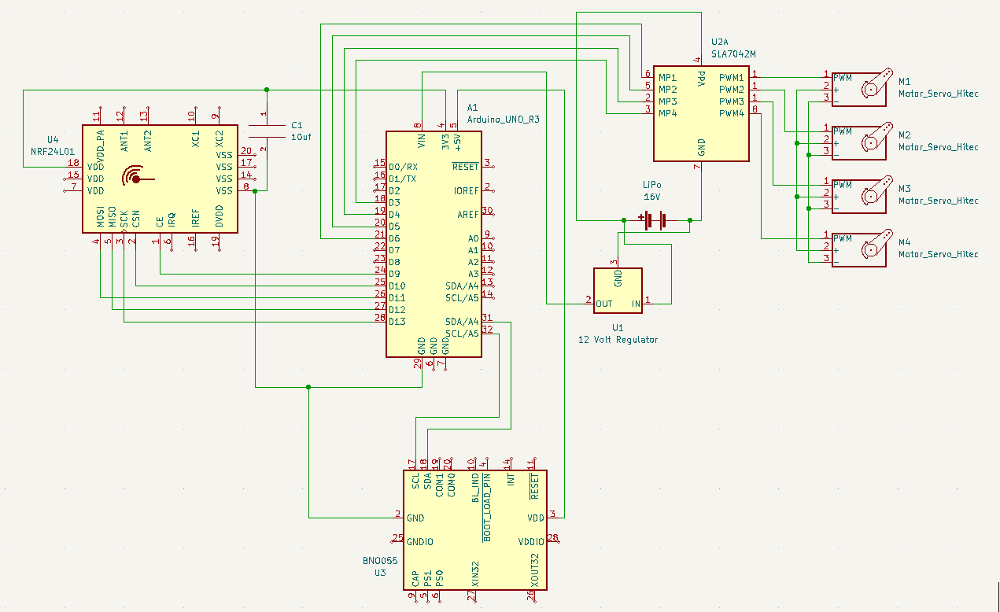

We taped down the original drone frame and attached cables from that to the drone to tether it while in flight. This allowed us to test our motor control and show proof of concept of our drone's flight. The video below shows one of our first test flights.

Each motor has a dedicated pin on the motor controller that allows for speed control by sending a pwm signal with a duty cycle of 1100 microseconds to 1900 microseconds. This signal is outputted from the Arduino’s digital pins; we use pins 3 - 6. The IMU communicates with the Arduino via I2C, so the respective clock and data pins are connected with the Arduino’s clock and data pins along with 5 volts and ground.The radio communicates with the Arduino via SPI, so the respective mosi and miso pins are connected with the Arduino’s mosi and miso pins along with 3.3 volts and ground.All of the wiring that connects to the Arduino is soldered to a protoboard that connects to all of the pins on the Arduino. The protoboard provided easy connections for all the wires, but, with each wire added, became more messy and susceptible to electrical shorts. A PCB would make the electrical debugging process much easier, but creating one before testing our entire system was not in scope with our project.

We wanted to implement a PID controller to allow the drone to stay flat at default, and then take control signals from the glove when/if they’re given. To accomplish this, we had the drone’s arduino access values from the IMU to determine the measured yaw, pitch, and roll, and then compare that to calibration values. This allowed us to get relative values for these 3 axes so that we could tell if the drone was aligned with a flat position.
The biggest improvement would be adding a solid mount for the Arduino on top of the drone. This would render the drone more symmetric and balanced, and allow for easier wire management. Second, adding a better propeller guard and landing gear would be critical for untethered testing. Currently, we are comfortable flying the drone with its current guard system but only while tethered. Finally, making a custom printed circuit board, or at minimum, a re-wired protoboard, would improve the looks and safety of the drone by reducing the amount of wiring.
created with
Website Builder Software .